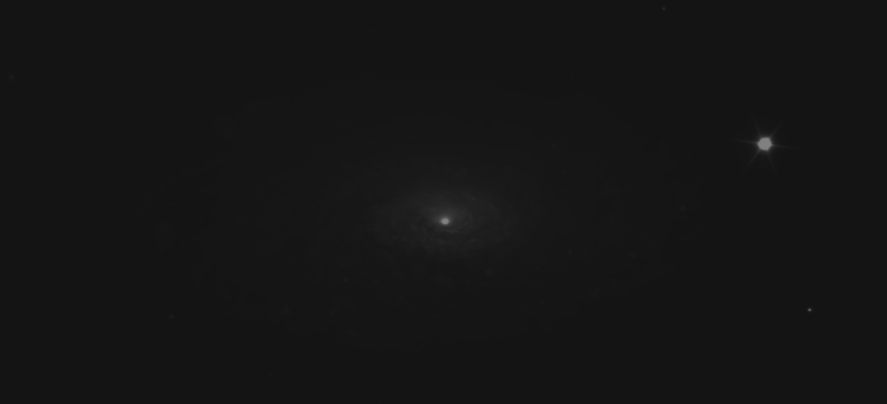
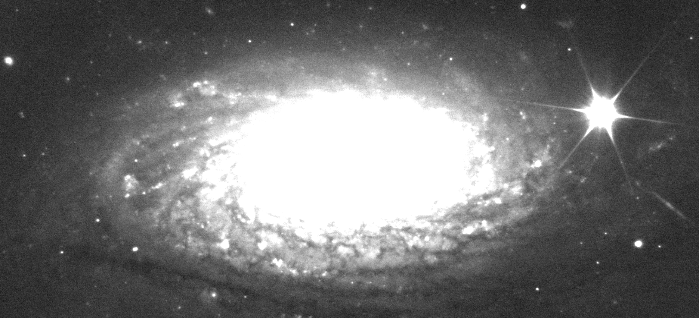
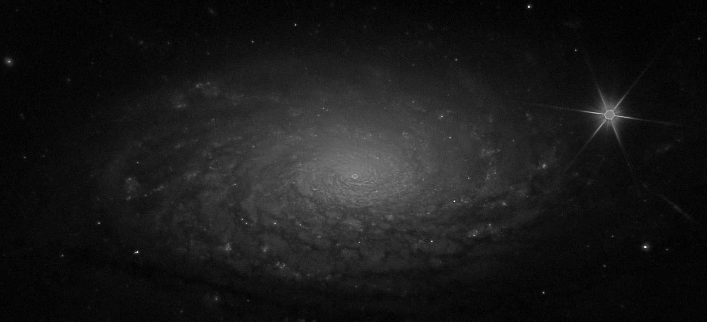
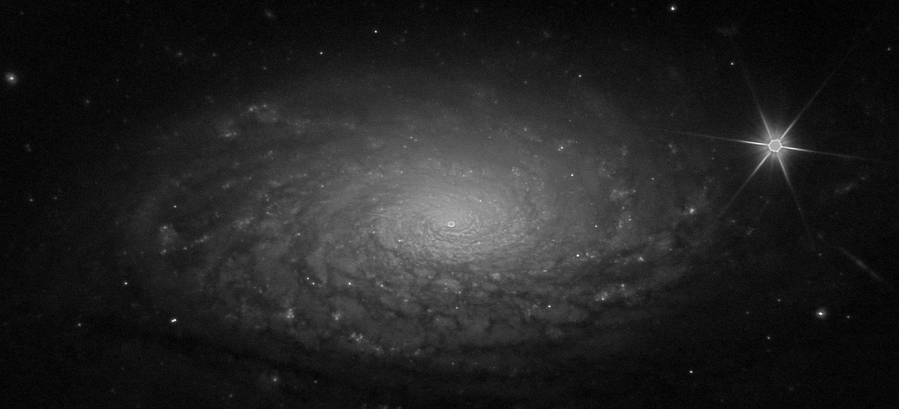

.
One Touch Processing - Native Astrophotography
|
HAMAL One Touch Processing - Native Astrophotography jest najmożliwiej autentyczną astrofotografią z maksymalnym efektem. Stworzyłem serię filtrów, które wypróbowywane kolejno na danym obrazie (ciężko przewidzieć, który sprawdzi się idealnie tym razem), jednym kliknięciem, w jednym kroku, jednocześnie wykonują rozciąganie gamma i wyostrzają obraz. Jestem zwolennikiem natywnej astrofotografii, mogąc poddać wszystkie pixele jednym krokiem temu samemu przetworzeniu uzyskujemy obraz ostateczny. Uważam, że jeśli mamy wydobywać ze stacku realne detale rozmiaru 1 pixela, to nie można go miętosić bez umiaru wszelkimi tool-ami i Ajajami. Ciemny, nierozciągnięty obraz wyjściowy. .  Obraz rozjaśniony za pomocą poziomów do momentu pojawienia się tła. .  Obraz uzyskany jednym kliknięciem (czy jak to nazywam, jednym dotknięciem), za pomocą HAMAL One Touch Processing - Native Astrophotography. .  Lekko rozjaśnione. Ten obraz jest najoryginalniejszym możliwym obrazem z maksymalnym efektem a minimalną liczbą przetworzeń. Jedno dotknięcie jednocześnie wszystkich pixeli tym samym sposobem pozwala mieć pewność autentyczności uzyskanego detalu. .  Można dyskutować nad estetyką takiej astrofotografii, jednak w tej dziedzinie to nie estetyka jest najważniejsza, lecz autentyczność osiąganego detalu, bo dziś, gdy coraz częściej się słyszy o domalowanych przez AI nieistniejących elementach obiektów, czas docenić piękno surowej natywnej astrofotografii, która dodatkowo niesie za sobą wartość dokumentalną i naukową. 
|